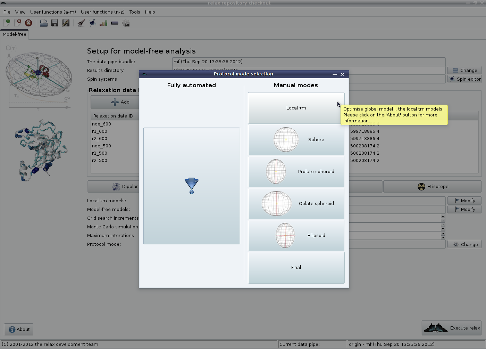

Next: d'Auvergne protocol GUI mode Up: The new protocol in Previous: d'Auvergne protocol GUI mode Contents Index
The local τm models and model-free models should not be modified, the reason for this is explained in section 7.8.2 on page ![[*]](crossref.png) .
The grid search increments defaults to ``11''.
This is used in the optimisation of the individual model-free models for each spin.
This value should also not be touched unless you know what you are doing (and have read d'Auvergne and Gooley (2008b)).
The number of Monte Carlo simulations can be increased but, for accurate error estimates, it should not be less than 500 simulations.
One additional setting is the ``Maximum iterations''.
This is a maximum number of times the protocol will iterate before terminating.
This allows infinite loops to be broken.
The value of 30 iterations should be fine for most analyses.
.
The grid search increments defaults to ``11''.
This is used in the optimisation of the individual model-free models for each spin.
This value should also not be touched unless you know what you are doing (and have read d'Auvergne and Gooley (2008b)).
The number of Monte Carlo simulations can be increased but, for accurate error estimates, it should not be less than 500 simulations.
One additional setting is the ``Maximum iterations''.
This is a maximum number of times the protocol will iterate before terminating.
This allows infinite loops to be broken.
The value of 30 iterations should be fine for most analyses.
The ``Protocol mode'' GUI element setting of ``Fully automated'' will not be changed for the analysis of this tutorial. However if you are studying a system without a 3D structure, you can execute each individual component of the analysis by clicking on the ``Change'' button. This will make the protocol mode selection window appear:
|

|
From this you can first select the ``Local τm'' model, then the ``Sphere'' and finally the ``Final'' mode, clicking on ``Execute relax'' between each selection.